monthly organic traffic
Informativegyan · within one yearSEO • LOCAL SEARCH • CONTENT • META ADS
I make search and paid social show their work.
Digital Marketing Specialist with 4+ years of hands-on experience across SEO, content, local search and paid social — with evidence from multi-industry client work.
TECHNICAL SEO•ON-PAGE / OFF-PAGE•LOCAL SEO / GBP•CONTENT SYSTEMS•AI OVERVIEW / SERP•WEB STORIES•QUORA / MEDIUM / PINTEREST•META ADS
THE PROOF WALL
Results first. Claims second.
Metrics below are drawn from the uploaded CV, SEO achievement report, old portfolio and DriveStylish paid-social case study. Where attribution or attribution scope is limited, it is stated.
Google Search clicks
The Golden Tusk · Apr 2025–Mar 2026Google Search impressions
The Golden Tusk · Apr 2025–Mar 2026Google Business Profile interactions
Sita Ram Diwan Chand · Feb–Jun 2026Instagram profile visits
DriveStylish Meta Ads · Jan–Jun 2026followers during campaign window
DriveStylish · +78.6% Jan–Jun 2026Instagram follower growth
Red Rose · 7,529 → 9,494 · May 2025–Aug 2026Instagram follower growth
Sita Ram Diwan Chand · 4,301 → 6,848 · Dec 2025–Aug 2026SELECTED CLIENT CASE STUDIES
Search growth, local visibility & paid social.
SEO01
The Golden Tusk
Hospitality · Luxury resort
Organic search growth documented through before/after Google Search Console evidence.
944 → 18.8Kclicks
22.9K → 824Kimpressions
23.6 → 9.8avg. position
Focus: keyword research, on-page optimization, content optimization, off-page execution, reporting.
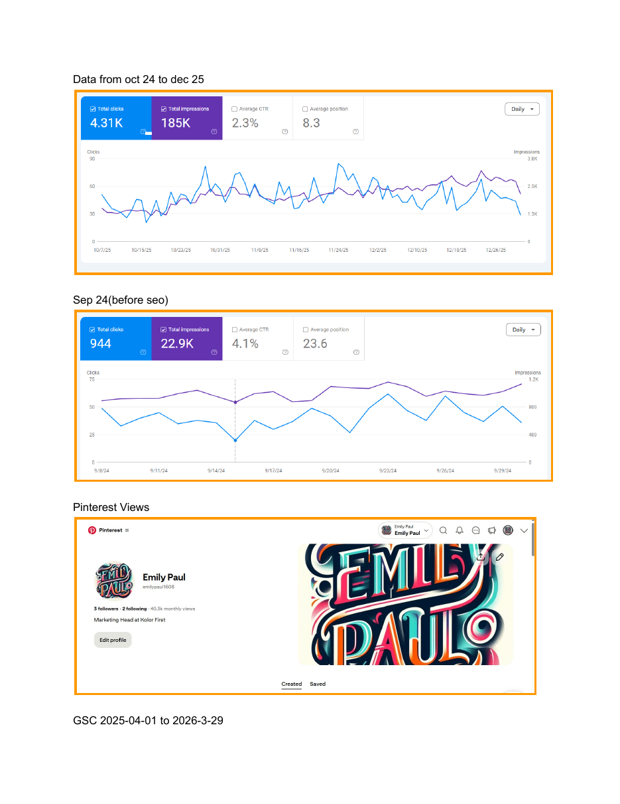
Evidence: SEO achievements report, Golden Tusk section.SEO + OFF-PAGE02
Sahni Fabrics
Fashion & textiles
High-volume search visibility supported by content and distribution work across search and off-page channels.
252KGSC clicks
25.7Mimpressions
111,894Quora views
2,400+referrals
Focus: on-page SEO, content, link/distribution activity, Quora, Pinterest and reporting.
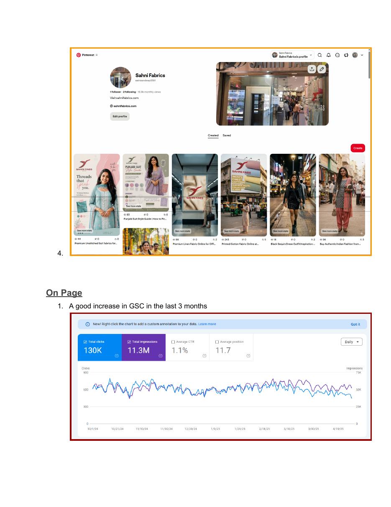
GSC evidence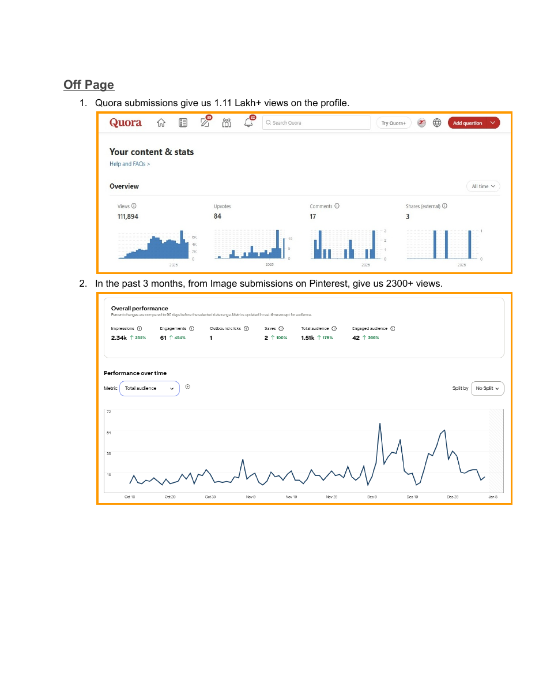
Off-page evidenceLOCAL SEO + AI SEARCH03
Sita Ram Diwan Chand
Food & restaurants
A local-search program combining location architecture, Google Business Profile, image search and AI Overview visibility.
12,430GBP interactions
9,192direction requests
35% vs 9%organic traffic share
Work: full site relaunch, location pages, SEO layouts, FAQs, footer content and internal linking.
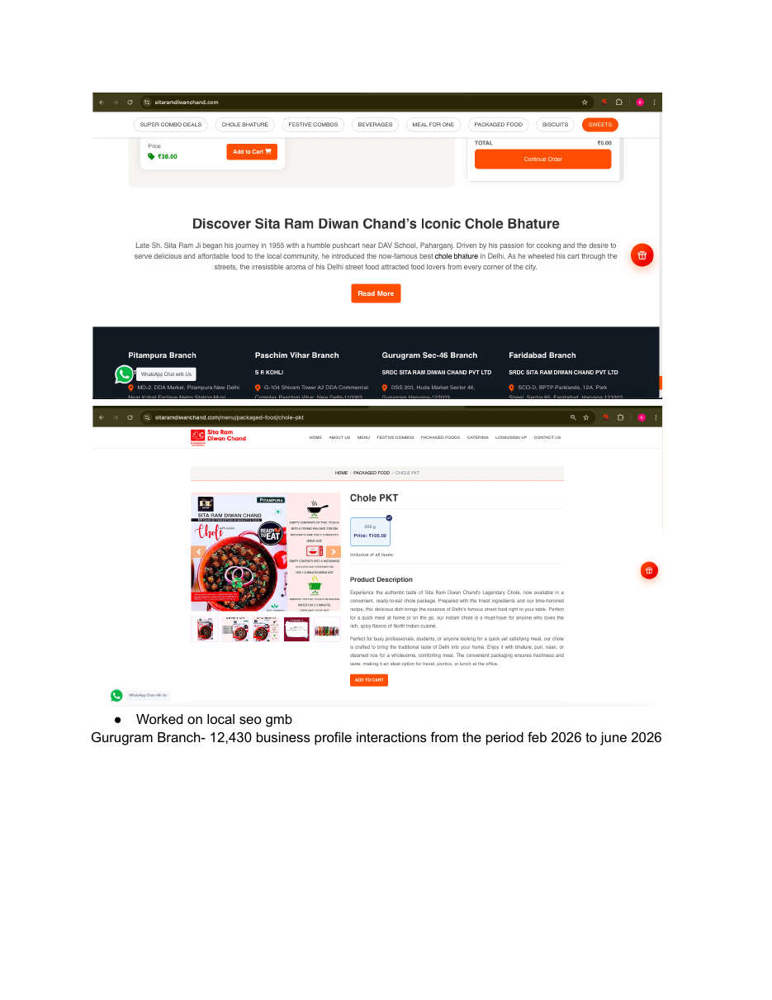
Local / GBP evidence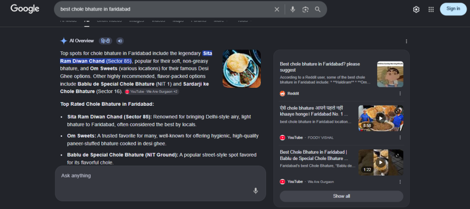
AI + image SERP evidenceMETA ADS04
DriveStylish
E-commerce · Car accessories
A focused Instagram Profile Visit campaign designed to turn paid reach into a measurable audience-growth loop.
₹52.7K6-month spend
188,075profile visits
+10,522followers
₹0.28cost / visit
Campaign: 9 ad sets tested; 5 delivered. Compared visits, CTR and CPM, then shifted spend toward winners.
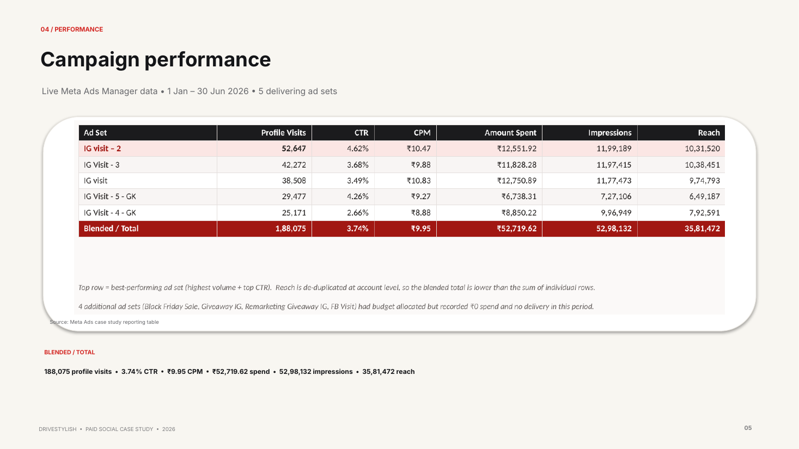
Meta Ads Manager reporting table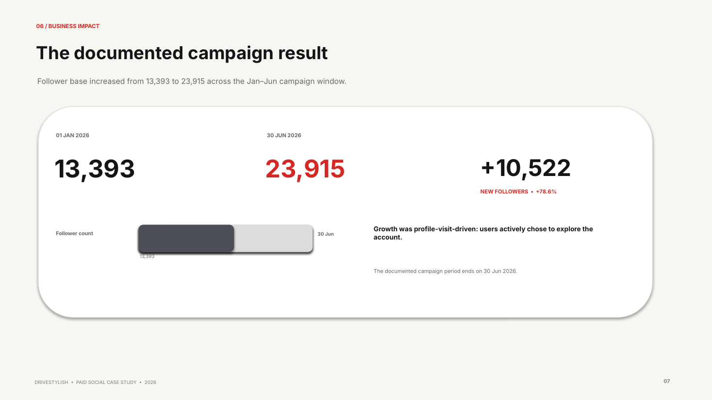
Documented follower resultAttribution note: the account later crossed 30K on 18 Aug 2026; that later milestone is not presented as wholly paid-attributed growth.
META ADS · INSTAGRAM GROWTH05
Red Rose
Food · Restaurant
Instagram audience growth tracked across the documented May 2025 to August 2026 period.
7,529 → 9,494followers
+1,965net followers
+26.1%growth
May 2025 → Aug 2026measurement window
Documented result: follower count increased from 7,529 to 9,494. Campaign spend, profile visits and paid-attribution data were not provided, so this is presented as an Instagram growth result rather than a quantified paid-media efficiency case study.
META ADS · INSTAGRAM GROWTH06
Sita Ram Diwan Chand
Food · Restaurant
Instagram audience growth tracked across the documented December 2025 to August 2026 period.
4,301 → 6,848followers
+2,547net followers
+59.2%growth
Dec 2025 → Aug 2026measurement window
Documented result: follower count increased from 4,301 to 6,848. Spend, profile visits, campaign objective and paid-attribution data were not provided, so no unsupported Meta Ads efficiency claim is made.
SEO + DISCOVERY07
Social Eyes
Digital marketing
In-house SEO and discovery work across site architecture, location pages, UAE pages, footer content and Web Stories.
+114.9%organic-search new users
+806%referral traffic
21.4KWeb Story views
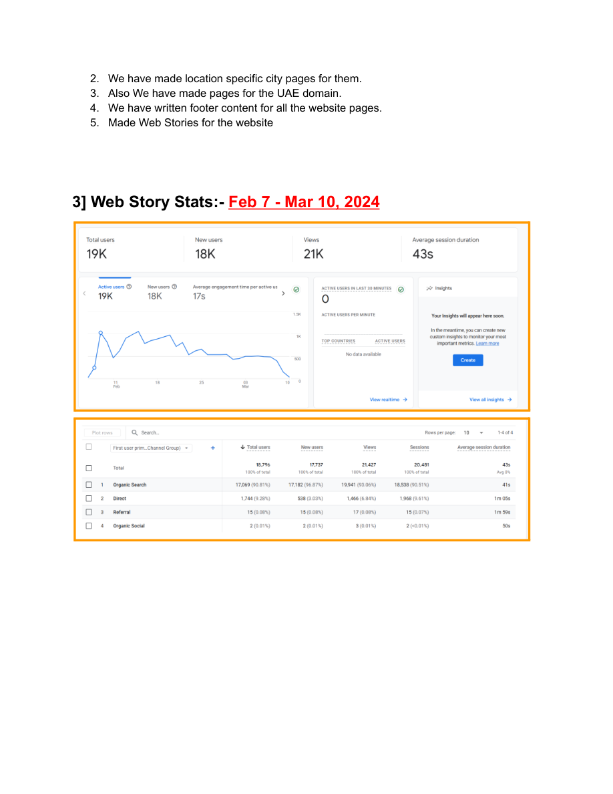
Discovery evidence from SEO achievements report.SEO + CONTENT08
Alma Awakening
NGO · Social impact · Health & wellbeing
Information architecture and content work across service/category pages, FAQs, footer architecture and event layouts.
6+new SEO pages
83.2KPinterest / month
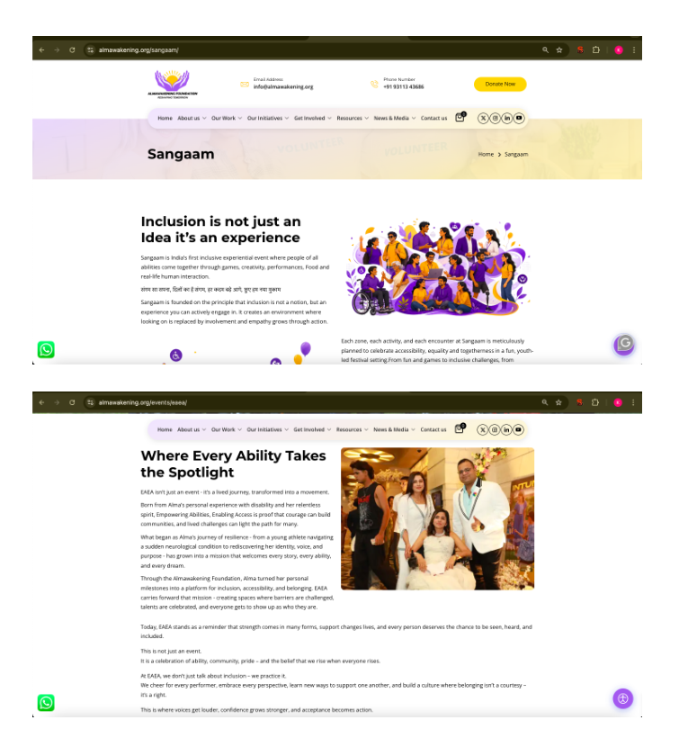
Project evidence page from the SEO achievements report.OFF-PAGE09
Pretty and Poised
Women's fashion · E-commerce
Off-page visibility work documented through Quora submissions and Pinterest image distribution.
1.11L+Quora profile views*
2,300+Pinterest views*
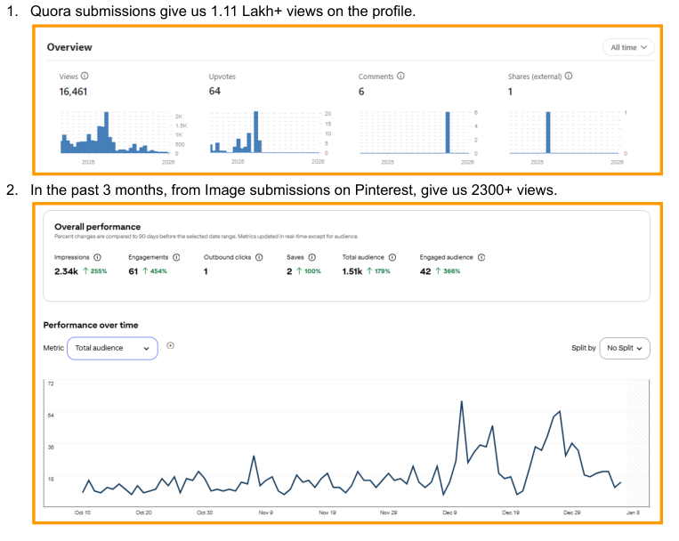
*The achievement document repeats these figures in this project entry; verify final attribution before public publishing.EVIDENCE LIBRARY
Selected screenshots that prove the work.
The portfolio uses screenshots selectively: each one is tied to a metric, implementation detail or channel result rather than used as decoration.
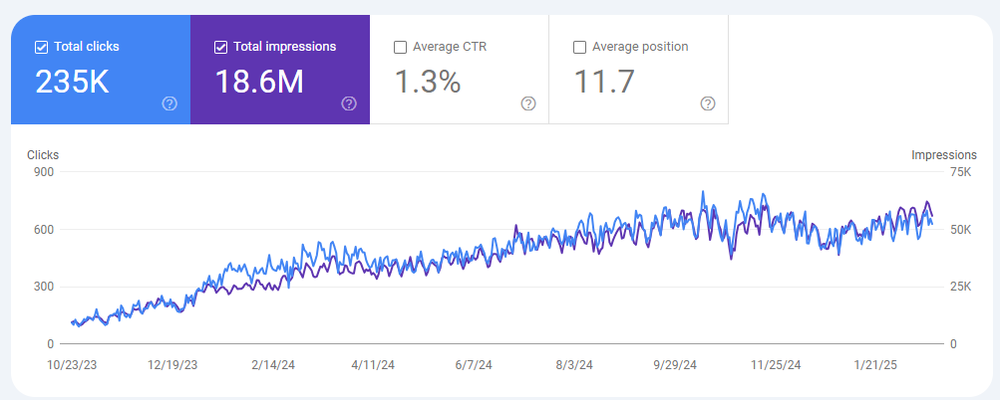
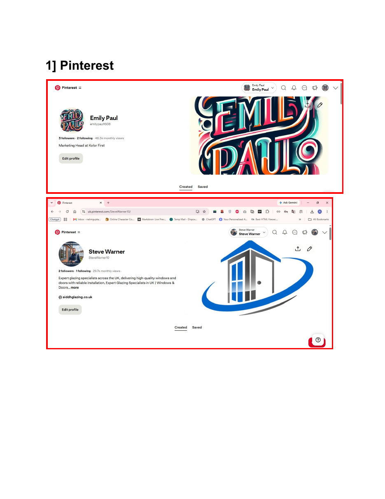
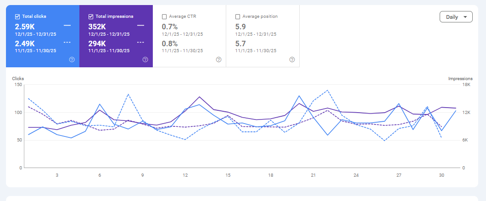
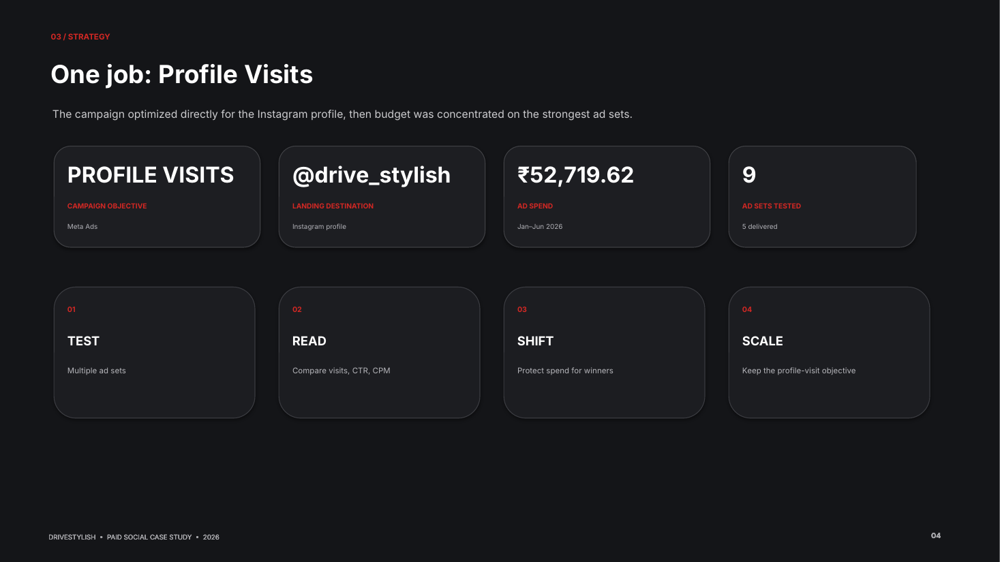
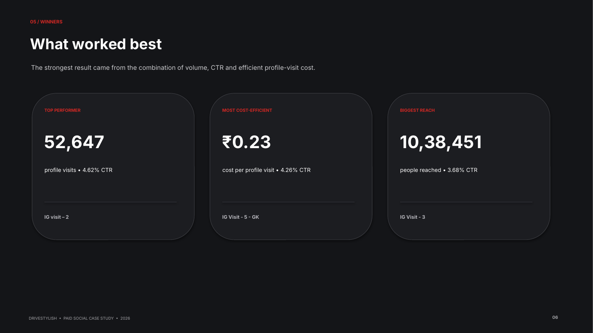
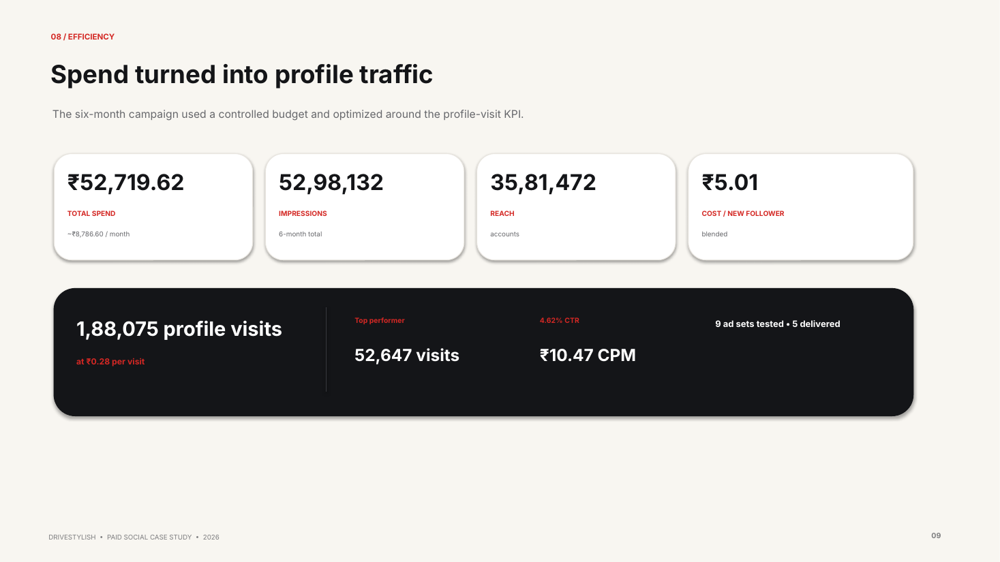
WHAT I ACTUALLY DO
A practical growth system.
I prefer a measurable chain: diagnose → map intent → build architecture → distribute → measure.
Technical & on-page SEO
Website audits, information architecture, metadata, internal linking, structured data, landing pages and content optimization.
Local SEO
Google Business Profile, location pages, local intent, directions, image visibility and local search journeys.
Content systems
Keyword research, topic clusters, FAQs, blogs, footer content, Web Stories and search-oriented content publishing.
Off-page & discovery
Link building, backlink analysis, Quora, Medium, Pinterest, referrals and discovery-focused distribution.
SERP / AI visibility
Search-result feature monitoring, image results and documented AI Overview visibility for local queries.
Meta Ads
Campaign setup, audience segmentation, creative testing, budget monitoring and optimization at beginner/intermediate level.
OFF-PAGE & DISCOVERY
Search visibility beyond blue links.
These are documented channel-level signals, not a claim that every visit or view is directly attributable to organic search.
111,894Quora profile views
83.2KPinterest monthly views
40.3Kadditional Pinterest monthly views
21K+Web Story views
5,800+YouTube views · Sahni Fabrics
2,300+Pinterest views · documented project
SELECTED CLIENT / PROJECT EXPOSURE
20+ brands across multiple industries.
Only clients with meaningful evidence are expanded above. The rest are shown here to avoid inventing outcomes where the source material does not provide enough detail.
Client / projectIndustryPrimary work / evidence
Surya RoshniLighting & electricalSEO / organic visibility
Orthomol USAHealthcare / supplementsSEO / organic visibility
Siddh GlazingBuilding materials / glazingSEO / Pinterest + GSC evidence
HimbutiAyurveda / wellnessSEO / content
SIS PrepEducation / preschoolSEO / search visibility
Matrix WindoorsHome / building / interiorsSEO / Web Stories
Bag SupplyPackaging2.91K clicks · 565K impressions · avg. pos. 17.2
Field PackagingPackaging573 clicks · 72.4K impressions · avg. pos. 24.9
Momar IndustriesIndustrial956 clicks · 164K impressions · avg. pos. 18.4
Alert SecuritySecurity506 clicks · 81K impressions · avg. pos. 16.8
Primary PackagingPackagingGSC performance documented
AERO DigitalDigital marketing669 clicks · 177K impressions · avg. pos. 13
Matrix WindoorsHome / building / interiorsWeb Stories / SEO
Field PackagingPackagingGSC performance documented
HarperCollinsPublishingMeta Ads support
BooktopusPublishing / booksMeta Ads support
Red RoseFood / restaurantMeta Ads support
Aviation SerriaAviationSEO project exposure
LuminiqueLightingSEO project exposure
FloatexSolar / energySEO project exposure
CAREER
From content execution to broader digital ownership.
Digital Marketing Specialist · Social Eyes Pvt Ltd
SEO + Meta Ads, local search, content optimization, audits, reporting and campaign monitoring across client accounts.
SEO Executive · Social Eyes Pvt Ltd
Keyword research, competitor analysis, on-page/off-page SEO, landing pages, content optimization and reporting.
Meta Ads Training & Certification · Social Eyes
Campaign optimization, audience targeting, creative testing, budget management and performance monitoring.
Digital Marketing Executive · Belly Fit Food & Beverages
Website, content and digital marketing support.
SEO Intern · Domyshoot.com
Keyword research, on-page SEO, content work and foundational link building.
Content Writer · Technofizi Solutions
Web content with focus on readability, search intent and structure.
OWN PROPERTY
Informativegyan — built from zero.
A personal WordPress project demonstrating end-to-end ownership: information architecture, keyword research, on-page SEO, competitor analysis, link building, content publishing and optimization.
28Kmonthly organic traffic within one year
LET'S TALK
Need SEO that shows its work?
Available for SEO, digital marketing and paid-social opportunities where measurable execution matters.